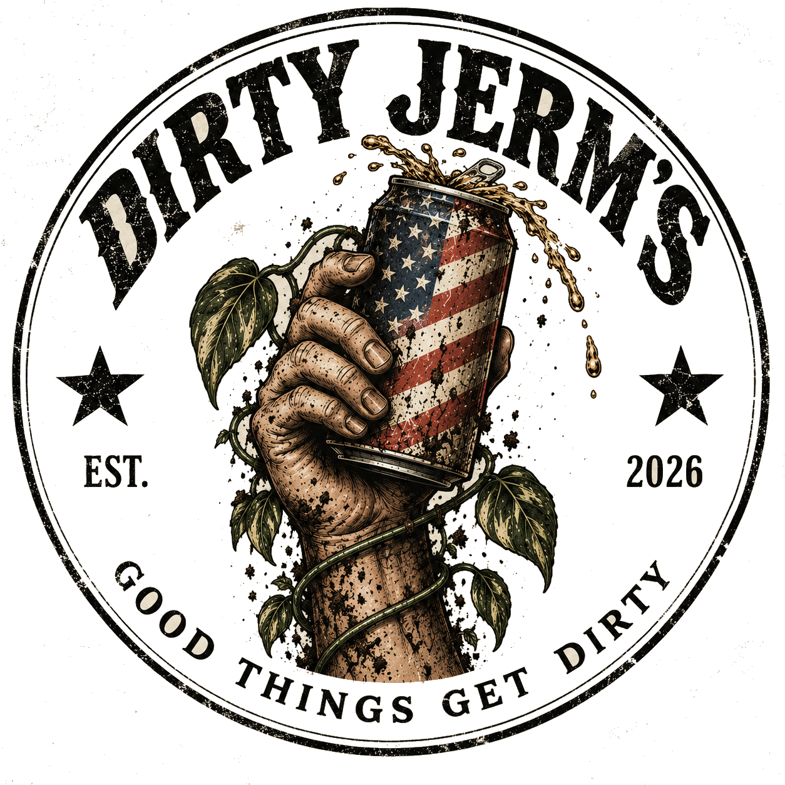

PLANT SUPPORTS
Modular supports designed around how climbing plants actually grow: grab on, root in, keep moving up.
THE CORE OF DIRTY JERM'SHEY. COME ON IN.
Dirty Jerm's is a small maker shop for plant people who like useful things, weird ideas, and seeing how the hell something actually gets made.
The door's open. There's probably dirt on the floor. Make yourself at home.

grab a drink.THE SHORT VERSION
That's pretty much it.
THE LONGER VERSION, SINCE YOU'RE HERE
Dirty Jerm's started with a simple problem: a lot of plant gear feels like it was designed around the product instead of the plant. So we're doing it differently.
We design, prototype, print, test, break, rebuild, swear at it, test it again, and keep going until it earns a spot in the world. The goal is useful gear that helps plants climb, root, unfurl and grow — without making plant ownership feel like homework.
And you're here early. Good. You get the sketches, ugly prototypes, dumb ideas that somehow work, good ideas that absolutely do not, and the final stuff that survives all of it.
WHAT'S ON THE BENCH
We're not trying to fill a warehouse with random crap. We're building a small lineup of products we actually care about — and releasing them when they're ready, not when a calendar says they should be.
Modular supports designed around how climbing plants actually grow: grab on, root in, keep moving up.
THE CORE OF DIRTY JERM'SIdeas built around getting water where it actually needs to go instead of pouring it on top and hoping for the best.
CURRENTLY GETTING MESSED WITHAccessories, experiments, limited runs, and the occasional “this might be stupid” idea that turns out to be useful.
WE RESERVE THE RIGHT TO GET DISTRACTEDWELCOME TO THE FOUNDRY
The Foundry is the dirty middle between “I have an idea” and “okay, this actually works.” It's printing, testing, trimming, changing a dimension, trying again, and wondering why version four somehow worked better than version seven.
We don't hide that part. It's half the fun. If something is ugly, we'll say it's ugly. If it fails, we'll show you why. When it finally works, you'll know exactly how it got there.
Some prototypes are gonna be ugly.
Good. They're learning.
Perfect is boring. Useful is better.
OPEN WHEN WE FEEL LIKE IT
SHOP. LEARN. HANG OUT. WHATEVER.
The live shows aren't supposed to feel like a sales pitch. Think less “shopping channel” and more “you stopped by your friend's house and now somebody's screwing around with plants on the kitchen table.”
Maybe we're showing something new. Maybe we're talking plants. Maybe a prototype broke five minutes before we went live. Maybe we're just hanging out. That's the point.
Come to shop. Come to learn. Come to hang out. All of it counts.
Ask a question. Teach us something. Roast an idea. Lurk in silence. Tell us about the plant you're weirdly proud of. Stay ten minutes or stay all night.
FIND DIRTY JERM'S ON WHATNOT →WHY THIS EXISTS
We care about making good products. We care about plants thriving. We care about testing things properly and making something worth paying for.
We just don't think any of that requires talking like a furniture catalog or acting like everybody needs to be impressed all the time.
Dirty Jerm's should feel like the garage, the greenhouse, the farm, the kitchen table and your best friend's house all got mashed together. Useful stuff. Dirt everywhere. Somebody laughing too loud. A project half-finished in the corner. You're welcome to stay.
THAT'S THE WHOLE DAMN BRAND.NEED SOMETHING?
Question, order issue, idea, complaint, or something else we should probably know about?
support@dirtyjerms.com We'll get back to you. Probably with dirt on our hands.LAST CALL
Thanks for stopping by. Door's always open.